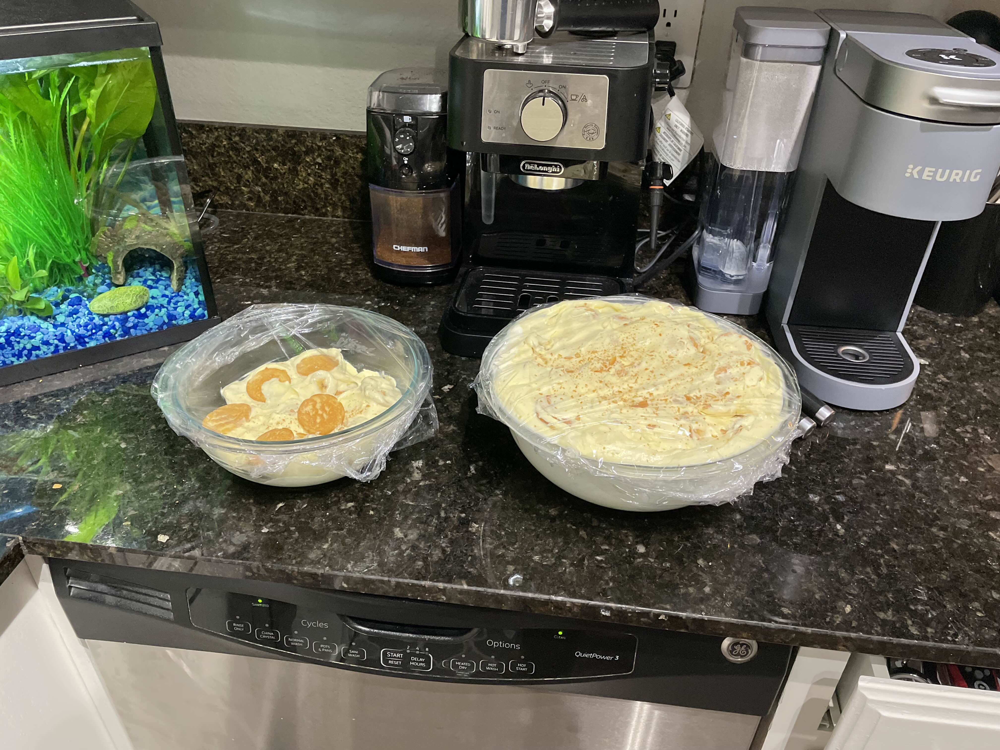

Home
Banana Pudding

Description
This Banana Pudding recipe is delicious and doesn't need a lot of ingredients to make!
Ingredients
- 2 cups cold milk
- 1 (5 ounce) package instant vanilla pudding mix
- 1 (14 ounce) can sweetened condensed milk
- 1 tablespoon vanilla extract
- 1 (12 ounce) container frozen whipped topping, thawed
- 1 (16 ounce) package vanilla wafers
- 14 small bananas, sliced or to taste
Steps
- Gather all ingredients.
- Place milk and pudding mix in a large bowl; beat with a whisk for 2 minutes. Blend in condensed milk until smooth.
- Stir in vanilla, then fold in whipped topping.
- Layer wafers, banana slices, and pudding mixture in a glass serving bowl.
- For best results, chill pudding in the refrigerator for at least an hour before serving. When ready to serve top with extra crushed wafers.